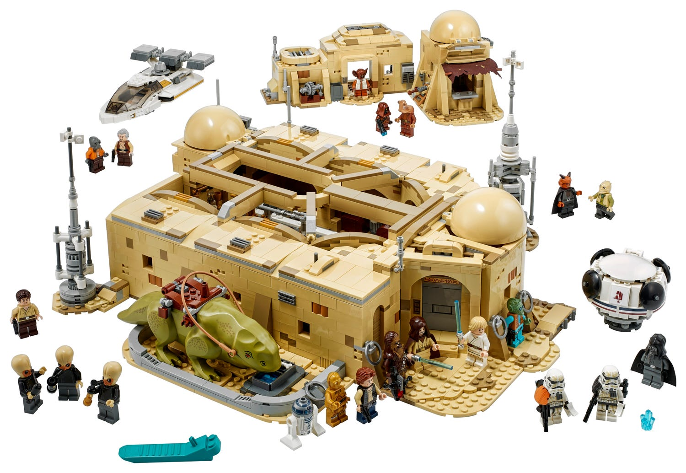
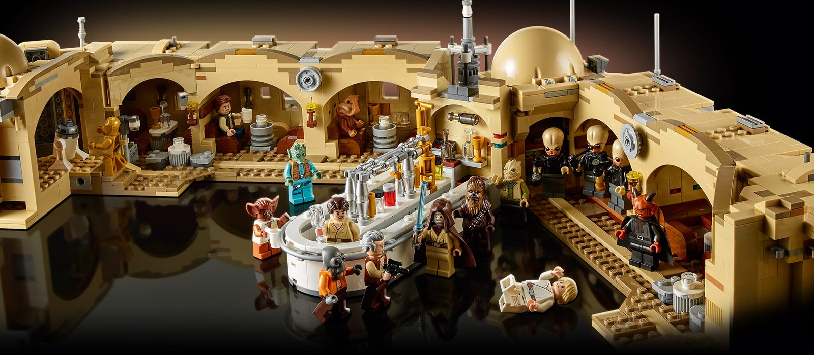
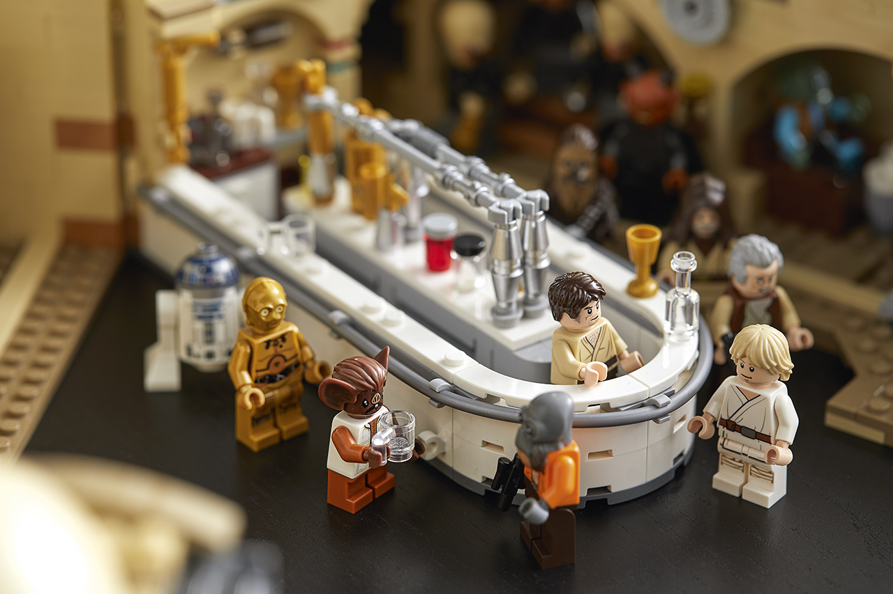
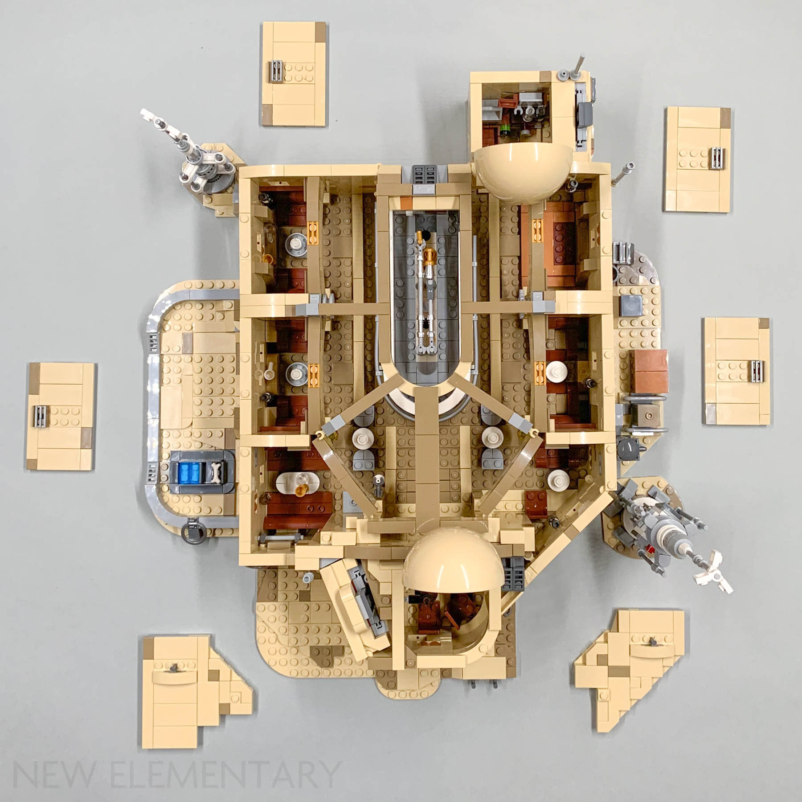

This Wab site is non-profitable and non-commercial

What is Mos Eisley Cantina ?
Mos Eisley cantina is cantiona on the planet tatooine in far far away galaxy. Cantina has tables alot tables and diffrent once there you can get diffrent star wars drinks like Ex: Blue Milk i know nothing about it but it is a thing in star wars universe.
It is and amasing looking place specialy in lego. There is a lego set of it which looks amasing. In Cantina alot of Diffrent aliens who go there often. Next to it there is java shop and small storage unit but also there is alot of houses you can build to put next to it.

Mos Eisley Cantina Open
Here you can see how Mos Eisley Cantina looks insaid. This Mos Eisley Cantina has alot of things in it and in this page you can reade most of it
For an example here you can see diffrent tables and bar and people every where, Yes there is alot of people in Mos Eisley Cantina all the time. Hope you wisit it soon. Mos Eisley Cantina works 24 on 7 (Don't take this web-site seriosly please)

Mos Eisley Cantina Bar
Mos Eisley Cantina has a bar and bar has alot of drink's, also bar has alot of diffrent products you can get and it is huge.
here you can see how big bar is and how butiful it is. Hope you Enjoy it. (This all not real please don't take it seriosly)

What is insaid ?
Insaid of Mos Eisley Cantina is alot of tables and alot of diffrent staff like bar, musition stand, entrence, staff room and alot more
on this image you can see what is insaid of it but with no roof.